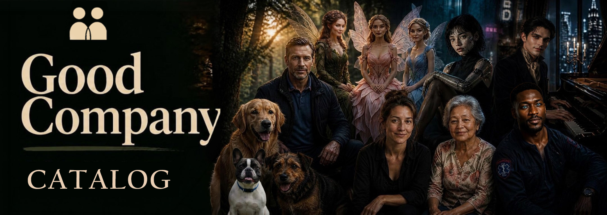

The catalog
Companions other people built and chose to share here. Pick one and you get your own copy: same face, same scenes, same personality. Memories not included — what does that mean?
Finding who's here…

Companions other people built and chose to share here. Pick one and you get your own copy: same face, same scenes, same personality. Memories not included — what does that mean?